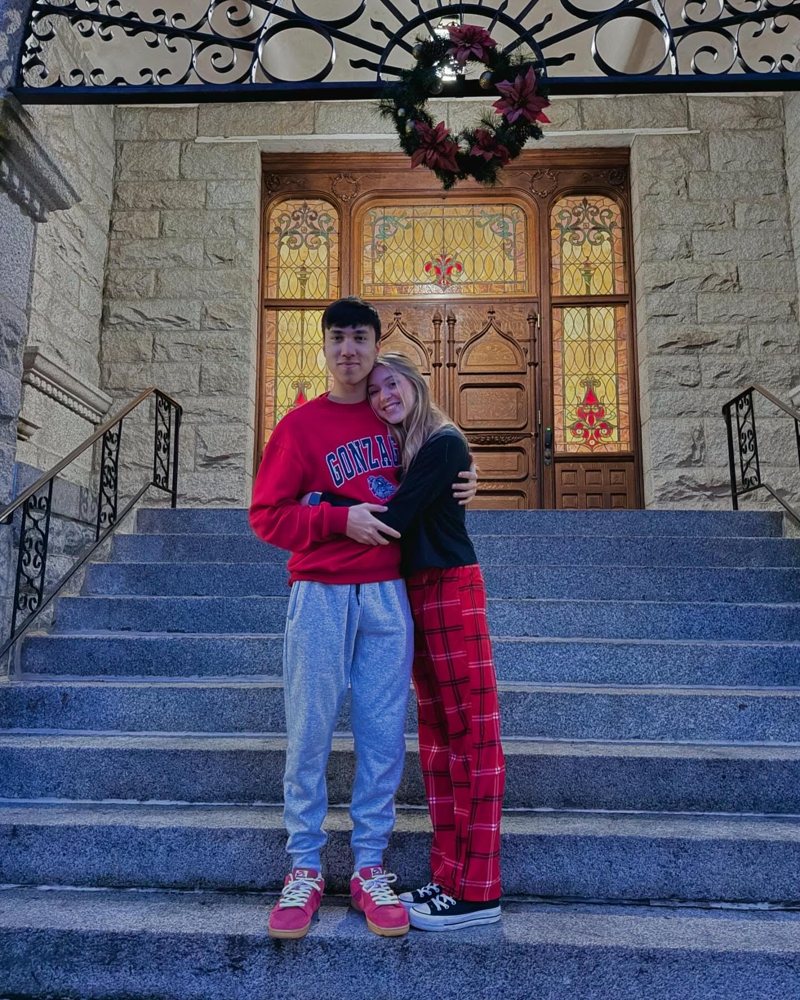
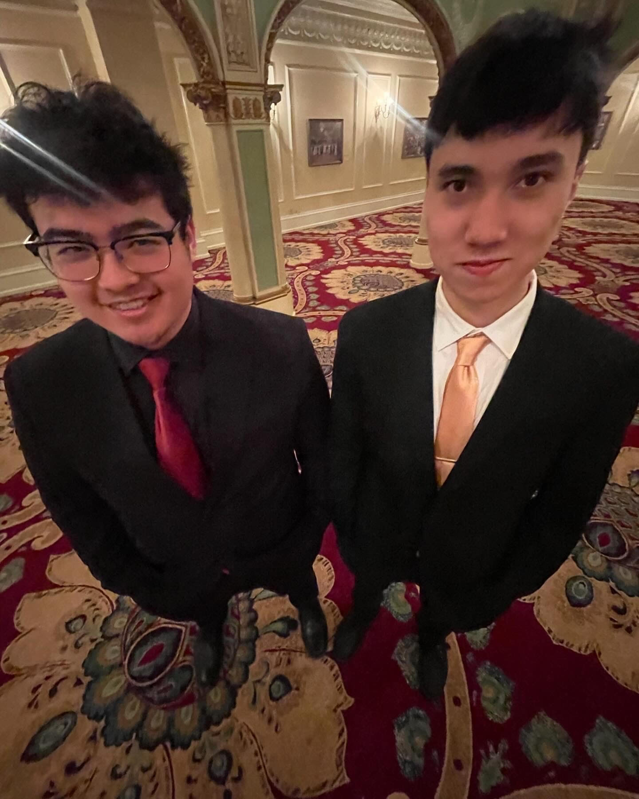

Tyler Arnold
Home | About | Contact
Hello! Welcome to my website!
I am a motivated second-year student at Gonzaga University with great academic performance,
effective communication and problem-solving skills, and ability to perform well in a team environment.
Seeking to gain new skills and apply leadership and teamwork abilities in a financial analysis or technology consulting internship position.
These are my links to my socials!
Click here to go to my LinkedIn
Here is a gallery of my favorite photos


About Me
Education | Leadership & Activities | Work Experience
Education
Gonzaga University: Spokane, WA 2023-2027
Major: BBA: Accounting | Minor: Hogan Entrepreneurial Leadership | Sophomore (3.94/4.0 GPA)
- Gonzaga University Honors Program: Honors college focused on learning through an interdisciplinary lens focused on social justice and critical thinking
- Hogan Entrepreneurial Leadership Program: Rigorous three-year honors program spanning all sectors of entrepreneurship culminating in a senior design program integrating all learned skills
- Academic Recognition: Presidents List (3.85+ GPA): Fall 2023, Spring 2024
Skyline High School: Sammamish, WA 2019-2023
International Baccalaureate Career Certificate Recipient: Business and Economics | Magna Cum Laude (3.81/4.0 GPA)
Leadership & Activities
Gonzaga University Overnight Host
- Volunteered in a leadership position dedicated to the success of high school seniors
- Focused on the creation of community between Gonzaga University and its incoming students
Gonzaga GSBA Finance Committee & Street Team
- Volunteered in a team leadership position focused on overseeing university club financing
- Participated in meetings to organize and plan events for the greater university community
DECA International Career Development Conference
- 6th Place International Finalist in the Business Law and Ethics Team Decision Making Event
- Held in Atlanta, GA
- International Qualifier in the Hospitality and Tourism Event and Operations Research Event
- Held in Orlando, FL
Core Competencies
Project Planning
Microsoft Excel
Leadership
Contact
Please feel free to reach out to me through these different channels of communication!
Email: tarnold3@zagmail.gonzaga.edu
Phone Number: 425-351-2441